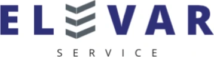
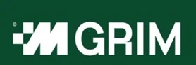
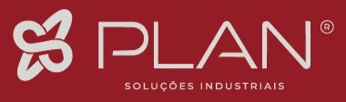

ISO 9001 Qualidade
O cliente ou o edital perguntou: “Possui ISO 9001?”
Processos padronizados, registros e indicadores que o seu cliente pode auditar.
Pedir diagnósticoImplantamos a norma e auditamos sua empresa antes do auditor oficial.
O cliente ou o edital perguntou: “Possui ISO 9001?”
Processos padronizados, registros e indicadores que o seu cliente pode auditar.
Pedir diagnósticoA licença ambiental pede controles que ninguém documentou.
Aspectos e impactos da operação, requisitos legais e controles documentados.
Pedir diagnósticoA obra só libera sua equipe com o PGR e os indicadores em dia.
Perigos, riscos e prevenção, com participação da equipe. PGR é o Programa de Gerenciamento de Riscos.
Pedir diagnósticoChegou o questionário ESG do maior cliente.
Diagnóstico e adequação de práticas e indicadores. Não é uma certificação ISO.
Pedir diagnósticoAs normas ISO funcionam em ciclo: planejar, fazer, checar, melhorar. Nosso método também.
O que sua empresa já tem e o que falta, requisito por requisito.
Procedimentos, registros e indicadores escritos com a sua equipe. Treinamento incluso.
Uma auditoria completa antes da oficial. O que estiver fora é corrigido com tempo.
Apoio na auditoria oficial. Apontamentos tratados sem custo adicional.
O certificado é emitido de forma independente pelo organismo certificador. A DLC responde pela preparação.
Empresas que são ou já foram clientes de Mariana Lima, da mineração aos serviços industriais.
Britas e areia industrial. Ouro Preto (MG).
Manutenção de revestimentos refratários. Matozinhos (MG).
Tecnologia, consultoria e projetos para mineração.
Logística reversa e comércio de sucatas. Matozinhos (MG).
Manutenção, caldeiraria e usinagem. Várzea da Palma (MG).

Manutenção de pontes rolantes e talhas. Belo Horizonte (MG).
Britas, pó de pedra e pedra de mão. Itabirito (MG).
Mineração.
Beneficiamento de minérios. Ouro Preto (MG).


Manutenção refratária, caldeiraria e mecânica industrial.
Refratários, isolamento térmico e mecânica. Matozinhos (MG).
As marcas pertencem às respectivas empresas e aparecem aqui apenas para identificar os clientes atendidos.
Com mais de 14 anos de experiência profissional, Mariana Lima construiu sua trajetória com foco na excelência operacional, no desenvolvimento organizacional e na transformação de processos em resultados sustentáveis.
Graduada em Engenharia de Produção pela Faculdade Pitágoras de Belo Horizonte, em 2012, é Auditora de Sistemas de Gestão Integrados (SGI), com atuação nas normas ISO 9001, ISO 14001 e ISO 45001.
À frente da DLC Consultoria, atua na implementação, manutenção e aprimoramento de sistemas de gestão, auditorias internas, conformidade legal, gestão de riscos, desenvolvimento de processos e preparação de empresas para certificações nacionais e internacionais.
Sua experiência contempla projetos em diferentes segmentos empresariais, com destaque para os setores de mineração, indústria, engenharia, prestação de serviços e operações vinculadas a grandes organizações.
Ao longo de sua carreira, desenvolveu competências em planejamento estratégico, gestão por indicadores, mapeamento e padronização de processos, auditorias, gestão documental, requisitos contratuais e desenvolvimento de equipes.
Possui também experiência no atendimento a requisitos de qualidade e documentação técnica de grandes contratantes, como Vale, Samarco e Petrobras, incluindo estruturação e adequação de Planos de Inspeção e Testes (PIT), Planos da Qualidade da Obra (PQO), Databooks e processos de controle e rastreabilidade.
Sua atuação vai além da elaboração de documentos e do atendimento às exigências normativas. Mariana acredita que um sistema de gestão verdadeiramente eficaz precisa fazer parte da rotina das organizações, ser compreendido pelas pessoas e contribuir diretamente para a melhoria dos resultados.
Com uma abordagem técnica, estratégica e humanizada, trabalha em parceria com lideranças e equipes, promovendo a cultura da qualidade, a prevenção de riscos, a responsabilidade socioambiental e a melhoria contínua.
Sua missão é transformar exigências em oportunidades, processos em resultados e conhecimento em evolução empresarial.
À frente da DLC Consultoria, Mariana reafirma seu compromisso de oferecer soluções personalizadas, práticas e tecnicamente fundamentadas, contribuindo para que empresas se tornem mais organizadas, competitivas, seguras e preparadas para novos desafios.
“Acredito que a excelência não está apenas em atender normas, mas em desenvolver pessoas, fortalecer processos e construir resultados que permaneçam.”
Uma conversa sobre a sua empresa e a exigência que ela recebeu.
Você sai com a norma certa para o seu caso, o ponto de partida da empresa, as lacunas principais e uma proposta com cronograma.
Gratuito
Pedir diagnóstico gratuitoDiagnóstico completo, plano com prazos, documentação, treinamento, auditoria interna, apoio na certificação e acompanhamento depois dela.
A taxa do organismo certificador é contratada à parte. Depois da certificação, seguimos com você nas auditorias de manutenção, com uma auditoria interna antes de cada uma.
Sob medida
Depende da norma, do porte e das unidades.
O diagnóstico é gratuito, e você vê o valor antes de decidir. Compare com o contrato que o certificado libera.
Depende do ponto de partida da empresa e da norma. O cronograma tem datas desde o primeiro mês, e um prazo de edital ou de cliente orienta o plano.
Não. A implantação acontece junto com a rotina, com algumas horas por semana dos responsáveis de cada área.
Dá. O difícil é saber se está pronto antes do auditor chegar. Para isso existe a auditoria interna.
Não. Quem emite é um organismo certificador acreditado. Ajudamos a escolher o organismo e preparamos sua empresa para a auditoria.
Sim. O sistema é dimensionado para o porte da empresa.
Sim. ISO 9001, 14001 e 45001 seguem a mesma estrutura de cláusulas, então implantamos em um sistema integrado.
Fale com a DLC pelo WhatsApp (31) 97317-0620 e confirmamos o atendimento para a sua cidade.
Comece sabendo exatamente o que falta.
DLC Consultoria
WhatsApp (31) 97317-0620
Olá! Quero um diagnóstico gratuito.
Este site não coleta dados: a mensagem só é enviada quando você toca em enviar, já dentro do WhatsApp.